Passiva er alle forpliktelser og egenkapital som et selskap har på et gitt tidspunkt. I enkel forstand representerer passiva “hvor pengene kommer fra” i en bedrift, mens aktiva viser “hvor pengene er plassert”. Sammen utgjør disse to sidene av balansen som alltid må være i likevekt.
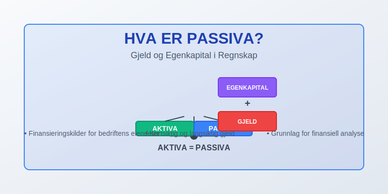
Hva er Passiva i Regnskap?
Passiva, også kalt gjeld og egenkapital, omfatter alle finansieringskilder som et selskap benytter for å finansiere sine eiendeler. Dette inkluderer både midlertidige forpliktelser som skal betales på kort sikt, langsiktige lån og egenkapitalen som eierne har investert i selskapet.
Passiva-siden av balansen viser kapitalkildene og består av to hovedkategorier:
- Egenkapital - Eiernes investering og opptjent overskudd
- Gjeld - Forpliktelser overfor kreditorer og leverandører
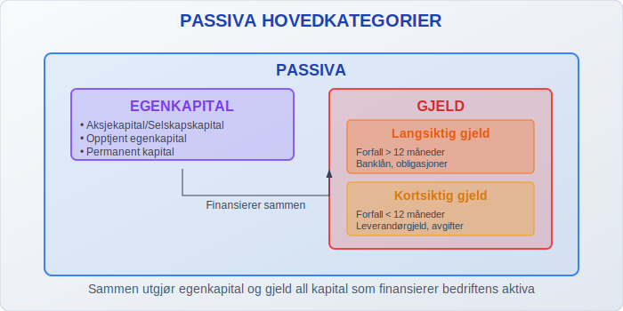
Passiva i Balansen
Passiva utgjør høyre side av balansen og må alltid være lik summen av aktiva. Dette kalles regnskapslikningen:
Aktiva = Passiva (Egenkapital + Gjeld)
Passiva-siden er strukturert hierarkisk, hvor egenkapital kommer øverst, fulgt av langsiktig gjeld og til slutt kortsiktig gjeld:
| Passiva-kategori | Beskrivelse | Tidsperspektiv |
|---|---|---|
| Egenkapital | Eiernes investering og overskudd | Permanent kapital |
| Langsiktig gjeld | Forpliktelser over 1 år | Over 12 måneder |
| Kortsiktig gjeld | Forpliktelser under 1 år | Under 12 måneder |
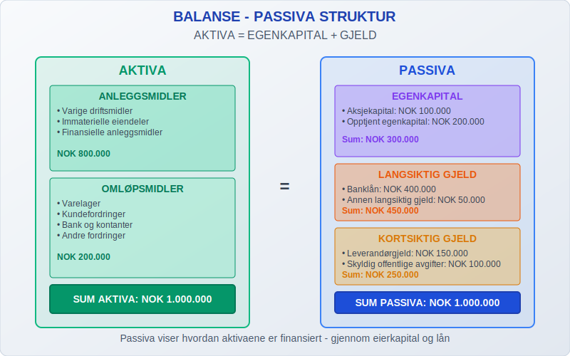
Egenkapital
Egenkapital representerer eiernes eierandel i selskapet og består av investert kapital pluss akkumulert overskudd som ikke er utdelt som utbytte.
Komponenter i Egenkapital
- Aksjekapital/Selskapskapital - Innbetalt kapital fra eierne
- Overkurs - Beløp betalt utover pålydende ved aksjesalg
- Opptjent egenkapital - Akkumulert overskudd som ikke er utdelt
- Annen egenkapital - Andre former for egenkapital
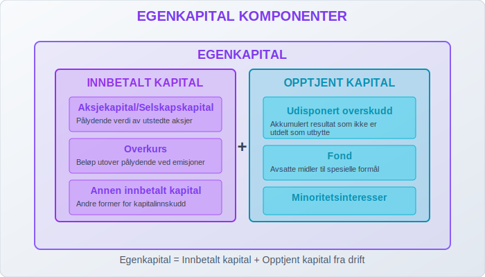
Egenkapitalens Rolle
Egenkapitalen fungerer som en buffer mot tap og gir selskapet finansiell fleksibilitet. Høy egenkapitalandel indikerer:
- Sterk finansiell posisjon
- Lav finansiell risiko
- Større handlingsrom ved investeringer
- Bedre muligheter for å tåle økonomiske nedgangstider
Gjeld (Forpliktelser)
Gjeld representerer alle forpliktelser selskapet har overfor eksterne parter. Gjelden deles inn i kortsiktig og langsiktig basert på forfallstidspunkt.
Kortsiktig Gjeld
Kortsiktig gjeld er forpliktelser som forfaller innen 12 måneder:
- Leverandørgjeld - Ubetalt til leverandører av varer og tjenester
- Skyldig offentlige avgifter - MVA, arbeidsgiveravgift, forskuddstrekk
- Annen kortsiktig gjeld - Påløpte kostnader, forskudd fra kunder
- Kortsiktig del av langsiktig gjeld - Avdrag på lån som forfaller innen ett år
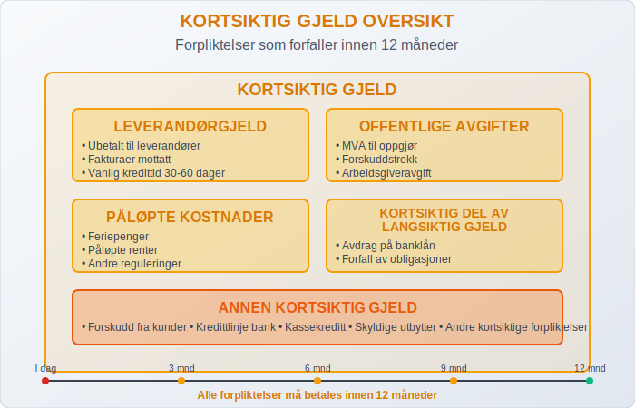
Langsiktig Gjeld
Langsiktig gjeld er forpliktelser med forfall over 12 måneder:
- Pantelån - Lån sikret med pant i eiendeler
- Fantegang - Sikringsrett der kreditor tar besittelse av eiendeler fra debitor for å sikre betaling. Se Fantegang.
- Obligasjonslån - Verdipapirgjeld utstedt av selskapet
- Annen langsiktig gjeld - Andre lån og forpliktelser over ett år
- Pensjonsforpliktelser - Forpliktelser knyttet til ansattes pensjoner
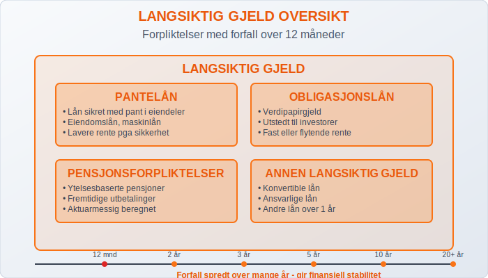
Passiva og Likviditet
Passiva-strukturen påvirker selskapets likviditet og finansielle fleksibilitet betydelig. En sunn passiva-struktur kjennetegnes av:
Optimal Kapitalstruktur
| Aspekt | Anbefaling | Begrunnelse |
|---|---|---|
| Egenkapitalandel | Minimum 20-30% | Tilstrekkelig buffer mot tap |
| Kortsiktig vs. langsiktig gjeld | Balansert fordeling | Unngå likviditetsproblemer |
| Gjeldsgrad | Under 70-80% | Akseptabel finansiell risiko |
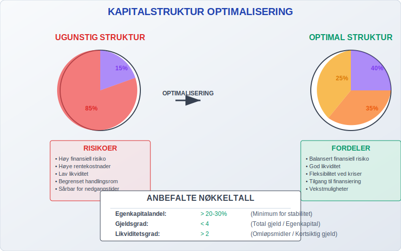
Likviditetsanalyse
For å vurdere selskapets evne til å møte sine forpliktelser, analyseres forholdet mellom:
- Arbeidskapital = Omløpsmidler - Kortsiktig gjeld
- Likviditetsgrad 1 = Omløpsmidler / Kortsiktig gjeld
- Likviditetsgrad 2 = (Omløpsmidler - Varelager) / Kortsiktig gjeld
Passiva i Forskjellige Selskapsformer
Passiva-strukturen varierer mellom ulike selskapsformer og må tilpasses gjeldende regelverk:
Aksjeselskap (AS)
- Minimum aksjekapital: NOK 30 000
- Krav til balanse og resultatregnskap
- Særlige regler for utbytte og kapitalforvaltning
Allmennaksjeselskap (ASA)
- Minimum aksjekapital: NOK 1 000 000
- Strengere rapporteringskrav
- Offentlig tilgjengelig informasjon
Enkeltpersonforetak og ANS
- Ingen minstekrav til egenkapital
- Ubegrenset ansvar for eier
- Enklere rapportering
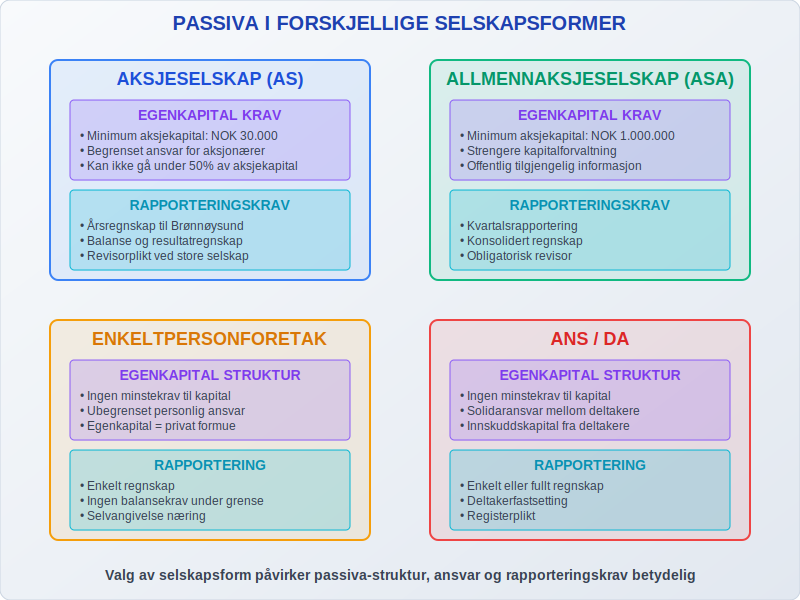
Lovkrav og Regulering
Passiva-rapportering er strengt regulert gjennom bokføringsloven og regnskapsloven:
Sentrale Bestemmelser
- Regnskapsloven § 6-1 - Krav til balanseoppsett
- Regnskapsloven § 6-2 - Klassifisering av gjeld
- Bokføringsloven § 4 - Krav til løpende bokføring
Rapporteringsfrister
- Årsregnskap - Innen 5 måneder etter regnskapsårets slutt
- Årsberetning - Sammen med årsregnskapet
- Innlevering til Brønnøysundregistrene - Innen 7 måneder
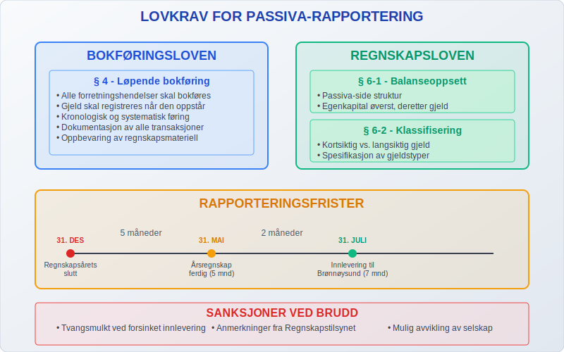
Passiva-forvaltning i Praksis
Effektiv forvaltning av passiva krever kontinuerlig oppfølging og strategisk planlegging:
Gjeldsstyring
- Refinansiering - Planlegging av lånefornyelser
- Rentebinding - Håndtering av renterisiko
- Forfallsstruktur - Spredning av forfall over tid
Egenkapitaloptimalisering
- Tilbakeholdt overskudd - Styrking av egenkapitalen
- Kapitalutvidelser - Emisjoner ved kapitalbehov
- Utbyttepolitikk - Balanse mellom utdeling og kapitaloppbygging
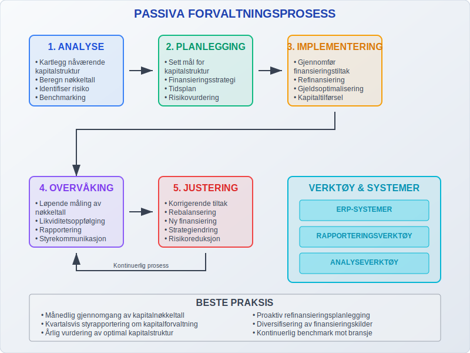
Passiva og Kredittvurdering
Passiva-strukturen er avgjørende for selskapets kredittverdighet og påvirker:
Finansieringsbetingelser
- Rente - Lavere rente ved god kapitalstruktur
- Sikkerhetskrav - Mindre sikkerhet ved høy egenkapitalandel
- Lånegrenser - Høyere lånekapasitet ved sunn passiva-struktur
Nøkkeltall for Kredittvurdering
| Nøkkeltall | Beregning | Ønsket nivå |
|---|---|---|
| Egenkapitalandel | Egenkapital / Total kapital | > 20% |
| Gjeldsgrad | Total gjeld / Egenkapital | < 4 |
| Rentedekningsgrad | EBIT / Rentekostnader | > 2 |
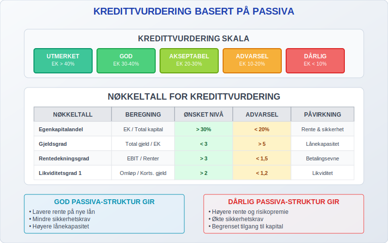
Digitalisering av Passiva-håndtering
Moderne regnskapssystemer og ERP-systemer har revolutjonert passiva-forvaltningen:
Automatiserte Funksjoner
- Automatisk kontering av leverandørfakturaer
- Forfallsovervåking for alle forpliktelser
- Likviditetsprognosen basert på forfallskalender
- Integrert rapportering til myndigheter
Sanntidsovervåking
Moderne systemer gir kontinuerlig innsikt i:
- Aktuell gjeldsposisjon
- Kommende forfall
- Likviditetsbehov
- Kredittutnyttelse
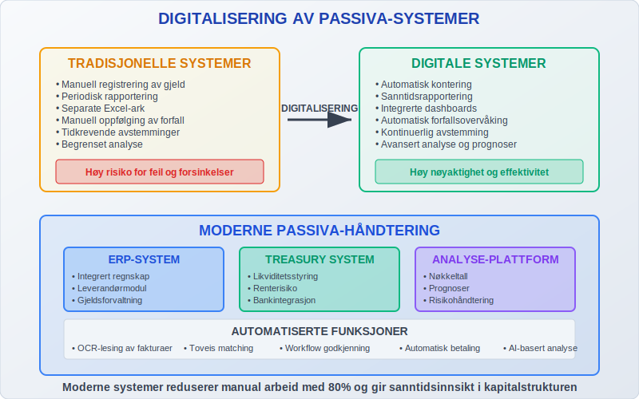
Utfordringer og Løsninger
Vanlige Utfordringer
- Likviditetsstyring - Balansere kortsiktige og langsiktige behov
- Refinansieringsrisiko - Sikre tilgang på kapital ved forfall
- Renterisiko - Håndtere svingninger i rentekostnader
- Valutarisiko - Administrere gjeld i utenlandsk valuta
Beste Praksis
- Diversifisering av finansieringskilder
- Langsiktig planlegging av kapitalstruktur
- Kontinuerlig overvåking av finansielle nøkkeltall
- Proaktiv kommunikasjon med långivere
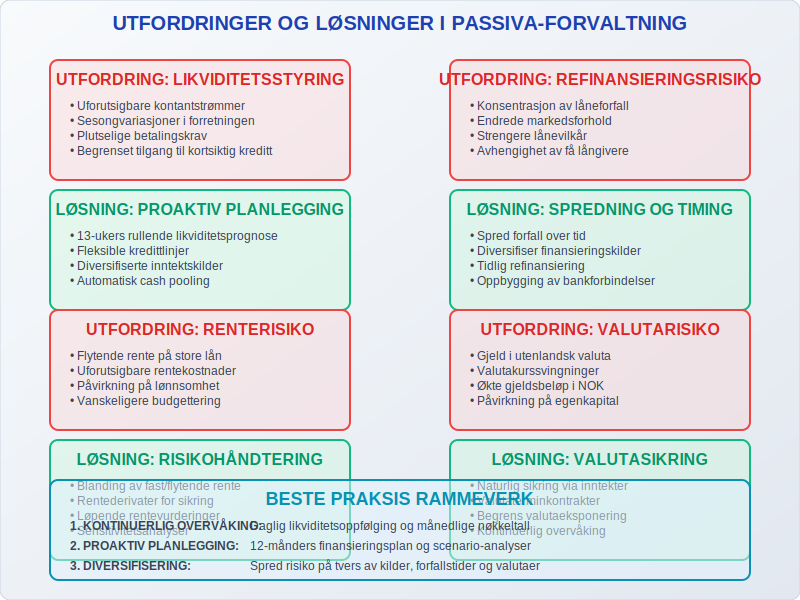
Fremtiden for Passiva-rapportering
Utviklingen innen regnskapsteknologi og regulering påvirker hvordan passiva håndteres:
Teknologiske Trender
- Kunstig intelligens for risikohåndtering
- Blockchain for transparent gjeldsregistrering
- Sanntidsrapportering til myndigheter
- Integrerte ESG-vurderinger i kredittvurdering
Regulatoriske Endringer
- Økt fokus på bærekraftsrapportering
- Strengere krav til risikohåndtering
- Harmonisering av internasjonale standarder
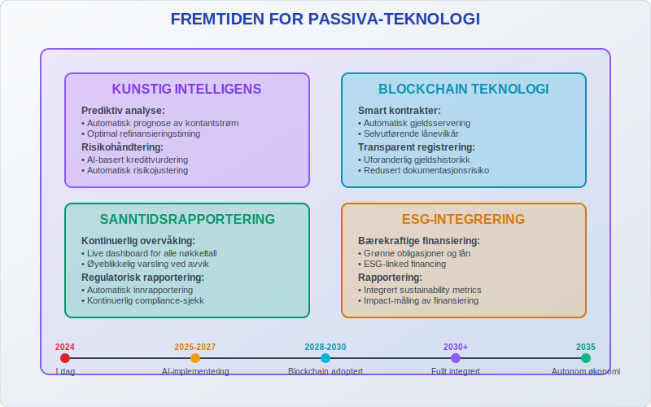
Konklusjon
Passiva er en fundamental del av enhver bedrifts økonomi og representerer alle kapitalkildene som finansierer selskapets virksomhet. En sunn passiva-struktur med riktig balanse mellom egenkapital og gjeld er avgjørende for:
- Finansiell stabilitet og evne til å møte forpliktelser
- Tilgang til finansiering på konkurransedyktige vilkår
- Fleksibilitet til å utnytte forretningsmuligheter
- Langsiktig bærekraft og vekstpotensial
Ved å forstå og aktivt forvalte passiva-strukturen kan bedrifter styrke sin finansielle posisjon og skape grunnlag for lønnsom drift og vekst. Moderne teknologi gjør det enklere enn noen gang å overvåke og optimalisere passivaen, mens endringer i regelverk krever kontinuerlig oppmerksomhet og tilpasning.
For bedrifter som ønsker å forbedre sin passiva-forvaltning, anbefales det å implementere systemer for løpende overvåking, utvikle klare retningslinjer for kapitalstruktur og sikre kompetanse på relevante regelverk og beste praksis.